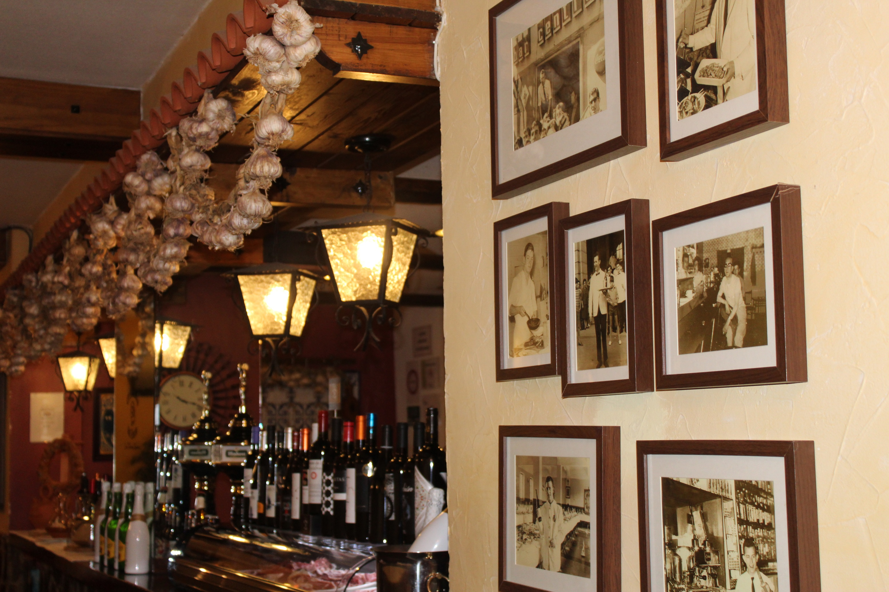

Cocido Castellano
El plato estrella de la casa. Menú completo con todos los vuelcos de la tradición zamorana, abundante y contundente.
Ver Cocido
Cocido castellano, carnes a la parrilla y pescados en cazuela de barro de Pereruela. Cocina lenta, productos de cercanía y el cariño de una familia hostelera de toda la vida.

El Mesón del Zorro es un espacio de estilo rústico-castellano diseñado para el disfrute de los comensales, con atención al detalle en decoración y ambiente. Un comedor íntimo con capacidad para unas 40 personas, donde se sirven comidas sin prisa y con productos de calidad.
El nombre homenajea a una saga familiar zamorana de hosteleros conocida como "los Zorros", encabezada por Pepe "el Zorro", que regentó establecimientos emblemáticos de la ciudad como El Central, El Salamanca, El Alcázar o El Azul Marino.
Platos tradicionales cocinados con cariño, sin prisa y con productos de calidad y cercanía. Desde el célebre cocido castellano hasta los postres caseros.
El plato estrella de la casa. Menú completo con todos los vuelcos de la tradición zamorana, abundante y contundente.
Ver CocidoCazuelas de gambas al ajillo, mollejas a la zamorana, sopas de ajo, cecina de León, queso zamorano y ensaladas.
Ver EntrantesChuleta de ternera zamorana, chuletillas de cordero lechal, solomillo y pluma de cerdo cebón, a la parrilla.
Ver CarnesBacalao en pisto casero y merluza en salsa verde, elaborados al fuego en cazuelas de barro de Pereruela.
Ver PescadosFlan de huevo, arroz con leche, tarta de queso, tocinillo de cielo y la caña zamorana de los fines de semana.
Ver PostresSelección de vinos de Toro, Tierra del Vino, Arribes y otras denominaciones, en cava a temperatura óptima.
Ver VinosOfrecemos platos tradicionales cocinados con cariño, sin prisa y con productos de calidad y cercanía.
4,7 sobre 5 en Google (1.126 opiniones) y 4,8 sobre 5 en TripAdvisor. Certificado de Excelencia TripAdvisor durante tres años consecutivos.
Probablemente el mejor cocido de Zamora Ciudad y de la provincia. Servicio exquisito y comida sobresaliente.
Celebramos la jubilación de una compañera con el mejor cocido que sirven en Zamora. Abundante y muy completo. Para repetir.
He comido varios días por trabajo. Todo estupendo, pero destacar el cocido con relleno, que es imposible de acabar. Buenísimo, y un excelente trato del personal.

El cocido castellano es la seña de identidad de la casa. Un menú completo con todos los vuelcos de la tradición zamorana, cocinado a fuego lento con los mejores garbanzos y productos de la tierra.
Menú del Cocido: 27,90 euros/persona. Menú Cocido Infantil: 17,90 euros.
Es muy recomendable, sobre todo los fines de semana, ya que el comedor tiene capacidad para unas 40 personas. Puedes llamar al 980 16 16 47 o escribir por WhatsApp.
De martes a sábado, de 13:30 a 15:30 (solo comidas, sin servicio de cena). Los domingos se abre de octubre a mayo. Los lunes es el día de descanso semanal.
Sí. Hay aparcamiento gratuito en las calles y plazas cercanas al establecimiento, en el barrio de Pantoja.
El Menú del Cocido cuesta 27,90 euros por persona. Hay un Menú Cocido Infantil a 17,90 euros.
Cocina tradicional zamorana: cocido castellano, carnes a la parrilla de ternera zamorana y cordero lechal, pescados en cazuela de barro de Pereruela, y postres caseros. Todo con productos de cercanía y calidad.
En la Calle Brahones 4, 49004 Zamora, en el barrio de Pantoja. A 5 minutos de la Estación de Trenes y Autobuses y a 10-15 minutos del centro histórico.
En el barrio de Pantoja, a 5 minutos de la Estación de Trenes y Autobuses. Aparcamiento gratuito en calles cercanas.